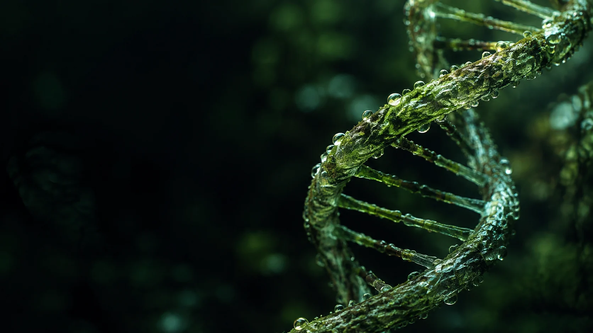

Predict.
More substrate. A different habitat.
What do you think will change?

WELCOME TO ENTELLOQ
An immersive laboratory that brings the living world closer — through interactive models, hands-on experiments, and a little curiosity.
More substrate. A different habitat.
What do you think will change?
Change a variable. Open a specimen.
The system answers immediately.
Follow structures and measurements.
Find the evidence for your idea.
Connect what you saw to a mechanism.
Then try a different situation.
Open a specimen. Trace a system. Discover how living structures fit and work together.
From the universe to a single atom. Follow one continuous journey through the scales of life.
Focus a microscope. Run a gel. Change an enzyme’s conditions and read what happens.
A good question can change the experiment. Make a prediction, test the evidence, and build an explanation through guided biology reasoning.
Think like a biologistMore substrate. The same enzyme. Will the reaction keep getting faster?
Move the slider and follow the rate. Then take the question to the working benches.
Open the working benchesAt [S] = Km, the reaction runs at half its maximum rate. Add substrate and watch the response.
The preview uses v = Vmax[S] / (Km + [S]): a simple steady state model at a fixed enzyme level. It does not model cooperativity or inhibition.
Move from structure to mechanism, from a lesson to a working bench. Six learning lenses connect the story, prediction, picture, maths, frontier and world.
Explore a topic, practise it, and find your next step. Your activity and progress stay in this browser, without points, streaks or leaderboards.
Find the dissection theatre, choose an instrument, and learn how your hands become the tools. Follow the guide at your own pace.
Guide me through hand dissectionYou can enter without an account. The preview is a lightweight canvas, and the lessons and experiments run in your browser. The immersive worlds and optional hand tracking can need more processing power.
Yes. Use a mouse or trackpad to choose instruments and work with a specimen. Webcam hand tracking is optional and starts only when you choose it.
No simulation captures all of life. Models simplify a system so you can investigate a mechanism. Read the assumptions beside each experiment, and use the measurements to test what the model can tell you.
Your activity and learning progress stay in this browser on this device. Optional Google sign-in adds your name and picture; it does not sync or back up your work. The learning tools work without an AI connection.
![Darsh Prasad, founder of Entelloq Networks]()
“Biology is the only subject where the thing you are studying is also the thing doing the studying. It should never have been reduced to a list to memorise.”
Darsh designed and engineered Biology Entelloq end to end — every specimen, every bench, every simulation and every pixel. Built on the same conviction as Physics Entelloq: the deepest way to understand something is to run it, bend it, and watch what happens.
See what he builtFree to explore. Your progress stays on this device.
Founder, Entelloq Networks. Designer and engineer of Quant, Physics and Biology Entelloq — interactive tools for learning through exploration.
Read the founder’s story ↗Get in touch ↗